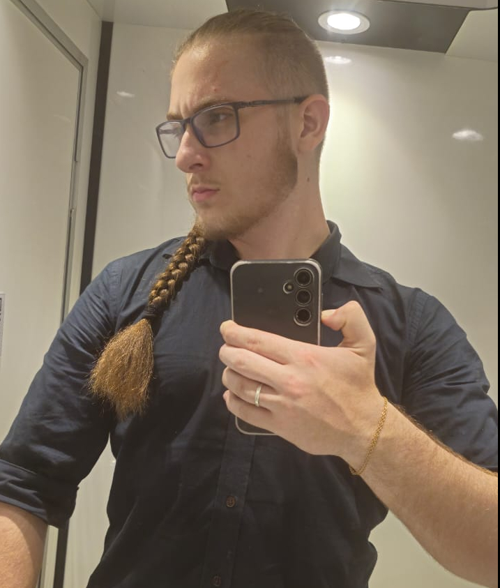

012026
Plataforma comunitária · Aplicação web
ajuda.cantina
Um guia multilíngue da cantina do IPB: consulte pratos com fotografias, planeje refeições e estime os gastos. Uma ferramenta prática criada a partir do cotidiano estudantil.
Aberto a oportunidades e projetos freelance
Desenvolvedor Web Full Stack e Analista de Software
Da primeira ideia ao último detalhe. Conecto interfaces, sistemas e dados para criar experiências digitais úteis.
Conheça meus projetos
Yggdrasil · Tudo está conectado
Bragança, Portugal · Atuação internacional
Role para descobrir01 / Projetos selecionados
Uma seleção de projetos para a web, aplicativos móveis e infraestrutura de software. Explore a experiência e o código por trás dela.
Plataforma comunitária · Aplicação web
Um guia multilíngue da cantina do IPB: consulte pratos com fotografias, planeje refeições e estime os gastos. Uma ferramenta prática criada a partir do cotidiano estudantil.
Sistemas distribuídos · Projeto acadêmico
Uma aplicação bancária que conecta uma interface Angular a um gateway Fastify e microsserviços Kotlin/Spring, com mensageria RabbitMQ e bancos de dados PostgreSQL e MongoDB.
Aplicativo móvel · Gestão de despesas
Um aplicativo de divisão de despesas desenvolvido com React Native, Expo e TypeScript, utilizando Supabase. Uma solução móvel para organizar gastos compartilhados.
Plataforma cultural · Desenvolvimento web
Um site para o grupo de teatro DIEGÉTIKA e uma ferramenta editorial para preparar notícias, produções e galerias. O editor permite visualizar o conteúdo e exportar pacotes de atualização.
Aplicação Full Stack · Projeto acadêmico
Uma aplicação de manutenção de equipamentos que combina front-end Angular com back-end Java e Spring. Análise de software transformada em um sistema web integrado.
Algoritmos · Processamento de arquivos
Uma ferramenta em C para compactação de arquivos por blocos e busca de texto. Combina LZW de 12 bits, busca KMP e descompressão incremental para pesquisar em conteúdo compactado.
Infraestrutura · Automação
Uma ferramenta de backup em Bash com rsync e cron, registros de execução e rotinas configuráveis. Repetibilidade e rastreabilidade para tarefas de administração de sistemas.

PEDRO EDUARDO DALL’AGNOL
Em Portugal. Conectado ao mundo.
02 / A pessoa por trás do código
Sou Pedro Eduardo Dall’Agnol, desenvolvedor brasileiro em Bragança, Portugal. Estudo Análise e Desenvolvimento de Sistemas na UFPR e participo de mobilidade acadêmica em Engenharia Informática no IPB em 2026–2027.
Meu trabalho conecta desenvolvimento front-end e back-end, análise de software, modelagem de bancos de dados e administração de redes. Gosto de transformar problemas complexos em soluções claras e práticas.
Yggdrasil, a árvore da vida na mitologia nórdica, inspira este portfólio: diferentes ramos, fundamentos em comum. Uma forma pessoal de representar a conexão entre design, código e infraestrutura.
Vamos conversar03 / Competências
Experiência organizada por área, das interfaces à infraestrutura.
Interfaces responsivas, interações e aplicações web.
Lógica de aplicações, programação orientada a objetos e integração de software.
Modelagem de dados, consultas e administração de bancos de dados.
Simulação e análise de redes, virtualização e suporte técnico.
Prototipação, modelagem de processos e documentação técnica.
Controle de versão, práticas ágeis e comunicação visual.
04 / Raízes e novos horizontes
Uma trajetória acadêmica entre Brasil e Portugal, com projetos práticos pelo caminho.
UFPR · Brasil · 2024—2027
Graduação tecnológica em andamento na Universidade Federal do Paraná. Conclusão prevista: final de 2027.

2025 · C / LZW / KMP
Uma ferramenta em C para compactação de arquivos por blocos e busca de texto. Combina LZW de 12 bits, busca KMP e descompressão incremental para pesquisar em conteúdo compactado.
Explorar projetoCapítulo atual
IPB · Bragança, Portugal · 2026—2027
Mobilidade acadêmica no Instituto Politécnico de Bragança. Uma experiência internacional que amplia meus conhecimentos técnicos e traz novas perspectivas para o trabalho colaborativo.
2026 · ajuda.cantina
Transformando a vivência no IPB em um projeto comunitário: um guia multilíngue da cantina que conecta informação, acessibilidade e planejamento de refeições.
 ajuda.cantina
ajuda.cantina 05 / A próxima conexão
Tem um projeto em mente ou uma oportunidade para compartilhar? Estou aberto a projetos freelance e oportunidades profissionais em Portugal, no Brasil e no mercado internacional.
+55 41 99777-3512 Bragança, Portugal